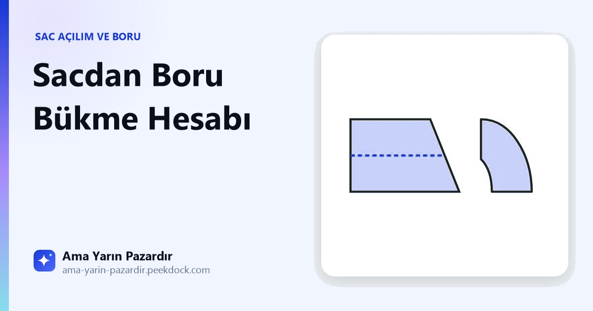

Ana sayfa › Araçlar › Boru ve açılım › Sacdan boru bükme hesabı
Sacdan boru bükme hesabı
Dış veya iç çapı, boyu ve sac kalınlığını girin; sacın hangi ölçüde kesileceği, çevre uzunluğu ve DXF çıktısı hazırlanır.

Sık sorulan sorular
Sacdan boru yapmak için kaç mm sac lazım?
Orta yüzey çevresi kadar: π × (D − t). 100 mm dış çaplı, 3 mm sacdan boru için yaklaşık 304,7 mm.
Kalınlık hesaba nasıl katılır?
Ölçü dış çapa göre verilirse çevre π × (D − t) olur.